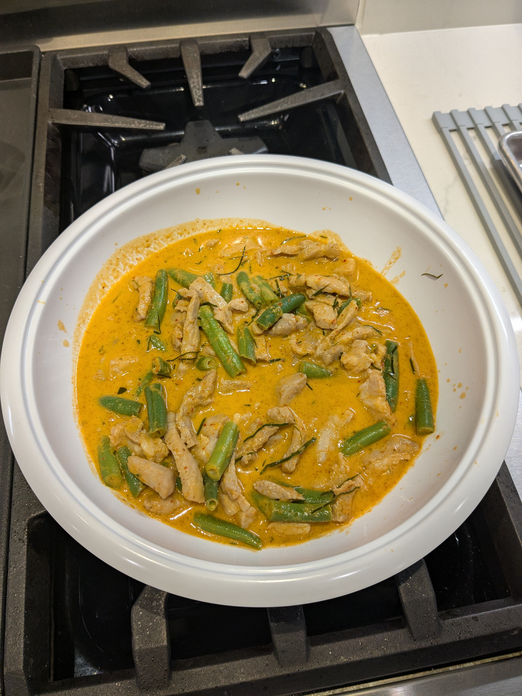

Panang Curry Pork

Ingredients
- 300g pork, very thinly sliced against the grain
- 100g green beans cut in 1" pieces
- 1½ tsp fish sauce
- 2 tsp oil
- 6 oz coconut cream + coconut milk
- 60g Panang curry paste
- 5 kaffir lime leaves, torn for the dish and finely julienned for presentation
- 1 tsp fish sauce or to taste
- 1½ tsp palm sugar, finely chopped, packed or 1.5 tsp granulated sugar
- A handful mild red pepper, thinly julienned for garnish, optional
- Jasmine rice for serving
Directions
- Add 1½ tsp fish sauce and oil to pork and massage it in with your hands, separating the pieces of beef that are stuck together as you mix.
- Heat the oil in a sauté pan or a wok over medium high heat, add the curry paste, and stir. The goal is to evaporate the water in the curry paste and bring out the oils.
- Add 2 oz of the coconut cream and continue to stir.
- Cook the paste for a few minutes, stirring constantly, until coconut oil separates away from the paste. If the paste sticks to the pan, you can deglaze with a bit of the remaining coconut milk.
- Add 1 tsp palm sugar and torn kaffir lime leaves and cook for a minute or so until the sugar is dissolved.
- Add the green beans and pork and toss it with the curry paste, separating the meat as much as you can.
- Once the meat is about 50% cooked, add the remaining 4 oz coconut cream and stir for 30 more seconds or just until the meat is fully cooked. If it looks too dry, you can add a splash of stock.
- Stir in red peppers, if using, and turn off the heat.
- Taste and adjust seasoning with more fish sauce and/or sugar as needed.
- Garnish with julienned kaffir lime leaves and more red peppers as desired.
- Serve with jasmine rice
Michael Fritsche
mbf@fritsche.org